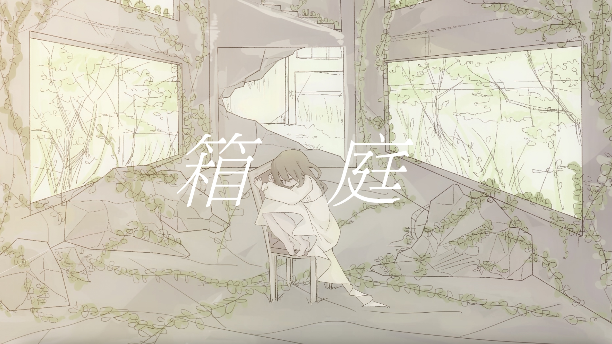

箱庭

Art by Moshi
作品介绍
《箱庭》绝对是我作曲最好的一首歌，
它是一首由白、褪色的淡黄、所构成的歌。
它像纸的颜色。
中文歌词在这里不是翻译，而是我确实写了两种语言的歌词（词格对的上的）
在我所有作品中，它拥有最温柔、最感性的温度，
谈不上忧伤，而是一种静静流动、近乎无声的柔软情绪。
这首歌诞生在大学最初的秋天，也是刚满18岁不久。
窗户有些水汽，风是柔的，那时的情绪也刚好相同，
温柔，却略微感性，安静，却并非悲伤。
这首最初的名字其实是「残差」。
那时候的我想象的是一种在成年之前强烈情绪抒发后“被滤去后剩下的量”
但我心里像装着一座小小的箱庭，里面摆放着褪色的记忆、散落的光点、沉静的颜色。
歌词里的“褪色的回忆”“被随意收起的碎片”隐约呼应着 Ipomoea alba 系列的情绪，却又是全新的开始。
它有一段并不显眼、却很重要的前身。
它最初其实是我在 2021 年年初写的《Hypohyphnotic》的重制。
当时我以为自己只是想把那首旧作重新拾起来，让它变得更成熟一点。
但后来我只保留了副歌的和声走向和副歌结构，还有完整照搬了那段间奏，其他全都没有用。
因为在真正动笔时，我发现自己已经无法回到原来的情绪里了。
Hypohyphnotic 所属于的是另一个阶段、另一种质地，而我当时的心境已经变得更轻、更柔、更清晰。
我意识到，如果继续沿着旧的轨迹走，这首歌就不会长成它想要的样子。
这首歌前半段只有钢琴，像闭上眼时水气轻轻落下；
副歌加入清音吉他，情绪变得清亮却仍然轻盈；
间奏以后，木吉他、鼓、贝斯逐渐展开，让箱庭真正拥有了脉搏。
第二次副歌是完整的前卫核编配，却依然温柔不锐利，是一种自然的扩散。
之后的 Solo 后，落回带着日光感的钢琴，是我心里对这首歌最理想的结局。
特别的是，《箱庭》在我还没有七弦琴、吉他都不太会弹的时候就被写出来了（不如说这是最后一首没实录的歌？在此之前其他歌也是这样），所以用的midi假吉他现在看来十分难听。
但我偶尔回头想，至今仍觉得这是我从 2020 年开始写歌以来，作曲上最好的一首。
因此我一直计划实录吉他，再做一次真正的混音（短期内就会做）。
甚至我还写过一个非前卫核版本，用木吉他作为副歌的律动，那个更像黄昏时的箱庭，未来很大概率会完成它。
《箱庭》不属于任何系列，但它的确携带着从Ipomoea alba走来的微弱余光。
它是一首关于柔软、初秋的宁静与感性的小歌谣。已于2026年10月28日完成吉他实录与混音。
IV–iii · 减七与小大七和弦
钢琴、清音与重型编制
Eb major → F major
95 → 90 BPM
完整制作与编曲说明
其实这首歌的和声大部分也是我先想好了根音怎么走，剩下的音基本都是凭音感按出来的。现在回头看谱子，倒是发现了一些自己当时完全没有从乐理角度想过的东西。
Intro & Verse
开头又是我很喜欢的 IV–iii（笑），也就是 Eb major 里的 Ab 和 Gm。不过实际上 G 上的和声不完全是一个 Gm7，里面还一直有 Eb，所以也可以理解成一个以 G 为低音的 Ebmaj9。
我很喜欢这种下面明明已经走到了三级小和弦，上面却还是有主和弦的影子的感觉。后来《春日和煦》里的 F#m 和 Dmaj7/F# 其实也是差不多的东西。
开头在 Ab 和 G 上的人声旋律是完全一样的，但 G 在第一个和弦上是 maj7，到了第二个和弦上又变成了根音，D 也从 #11 变成了 5。所以人声甚至不需要改变任何一个音，就可以从一个比较明亮的 Lydian 色彩过渡到另一个相对柔和的小和弦上。
前面钢琴左手基本只是在弹根音，后面才慢慢把其他构成音放进去。其实我没有很想让钢琴一开始就弹得很满，这首歌前半段有足够的时间让同样的旋律和和声慢慢展开。
主歌结束之前还有一个现在看来挺奇怪的和声，钢琴和合成器里出现了 G、B、F、Ab，有一点 G7(b9) 的色彩，但下面的音又不完全统一。钢琴右手之后从 B 经过 Bb、Ab 一直走到 G，也没有按照这个属和弦本来的功能去解决到 Cm。
Chorus
副歌的和声是这首歌里我自己最喜欢的东西，也是从 2021 年的 Hypohyphnotic 里保留下来的部分。
前四小节的根音是 Ab–Bb–C–Bb，后四小节则变成了 Ab–B–C–Gb。其实前半和后半的人声有不少相似的东西，但下面两个根音的变化已经足够让整个乐句听起来不一样了。
Ab 上的和弦里有相当明显的 Lydian 色彩，尤其是清音吉他的 voicing，有些地方主要在弹 Ab、C、D、G，甚至没有五度，反而把 maj7 和 #11 在不同八度上重复了好几次。剩下的 5、9、13 则由钢琴和人声之类的其他声部补充。
我还挺喜欢这种把一个和弦拆开来写的方式，单独听每一轨的时候可能都不是什么很复杂的和弦，但合起来之后就完全是另外一种东西了。
后半段那个 B natural 上的和声其实更有意思。钢琴和合成器里有 B–D–F–Ab，也就是 Bdim7，但与此同时清音吉他还一直保留着 Bb。
Bdim7 和 Bb7 刚好共享 D、F、Ab 三个音，两种和声实际上只差一个根音的半音变化。这里却没有很明确地只选择其中一个，而是让 B 和 Bb 在不同的乐器里同时存在。人声也还是按照原来的旋律在唱，并没有为了这个减七和弦特意换一套音。
从功能和声来看，Bdim7 本身是可以很自然地往下一个 Cm 解决的，但因为中间一直有 Bb 的存在，这个过程又没有那么像一个很常规的副导和弦进行。
最后一个 Gb 上的和弦也是我很喜欢的。它实际上是 Eb–Gb–Bb–D，也就是 Ebm(maj7) 的第一转位，人声还会补充一个 F。
明明整首歌是在 Eb major 里，这里却突然用了同主音小调的小三度，但又保留了原本的大七度 D。我很喜欢 minor major seventh 这种有点矛盾的色彩，尤其是放在一个本来应该快要结束的乐句里。
后面还有一个类似的和弦，根音是 B，上面的音是 D、F# 和 Bb（或者说 A#），刚好又是一个 Bm(maj7)。所以现在回头看，这首歌里这种小三度和大七度同时存在的东西其实还挺多的。
Interlude & Verse II
这段间奏是从 Hypohyphnotic 里完整搬过来的东西，反而是整首歌里保留得最彻底的部分。
这里有一条很简单的高音 D，下面在 Ab 和 Bb 之间走。D 在 Ab 上是 #11，到了 Bb 上又变成了大三度。我发现自己好像确实一直都很喜欢这种音本身不需要发生任何变化，只需要改变下面的根音，它就会变成完全不同的东西的写法。
间奏之后终于开始慢慢加入完整的乐队编制。
两条清音吉他一开始有一些相同的音型，后面又会逐渐分开，一条在比较高的音区继续走旋律，另一条则去补充下面的和声。
比如在 G 上，清音吉他有一段一直在弹 Bb–D–F–C，单独拿出来其实是 Bbadd9，但放在贝斯的 G 上就变成了 Gm7(add11)。所以吉他本身不一定非要从根音开始弹，反正贝斯已经在那里了。
贝斯也有一些比较独立的东西，比如在 Ab 的最后会从 D、Eb、F 一路走到 G 和 Bb，既补充了原本和弦的 #11，又稍微提前引出了下一个小和弦的色彩。
这里的贝斯没有后来 Affizieren 里的那么多演奏技法，更多还是在和清音吉他、钢琴一起构造和声。
Heavy Chorus
第二次副歌终于变成了一首比较正常的 progressive metalcore 了（虽然已经过去了两分多钟）。
但这里其实没有因为变重型了就把前面的和声全部换成 power chord，原本那些比较奇怪的和声基本都还在，只是用了不同的方式去弹。
比如之前 Bdim7 和 Bb7 之间的那个半音关系，在这里直接被写进了低音 riff 里，贝斯和其中一条节奏吉他先在 B 上弹切分，后半小节又回到 Bb。另一条失真吉他却还在比较高的音区弹 Bb、Ab、G、Eb 组成的旋律。
所以两条失真吉他也不完全是在 double track，有些地方一条负责下面的节奏，另一条反而在弹旋律或者和弦里比较高的音。之前清音版本中存在于和声里的摩擦，到了这里又变成了 riff 本身的一部分。
我觉得重型和温柔这两个东西本身也不是矛盾的，并不是加了失真吉他和双踩之后，整首歌就一定要变得很有攻击性。尤其这首歌，我其实不太想让后半段和前半段变成两种不同的情绪。
Modulation & Solo
最后一次副歌从 Eb major 整体往上移了一个全音，到了 F major。
这里不只是人声升了调，之前整个副歌里那些比较奇怪的和声关系也都被移了过去。比如 Bdim7 变成了 C#dim7，Ebm(maj7)/Gb 变成了 Fm(maj7)/Ab，原来的 Lydian 色彩也还是一样的。
Solo 下面继续用的是这套升调之后的副歌和声，没有为了 Solo 再特意写新的 chord progression。
Solo 前面还是比较偏旋律性的，后面才开始写一些速度比较快的东西。其中有一段三十二分音符一直在重复 E–C–A–C，单独看其实只是一个 Am 的分解和弦，但下面的根音是 Bb，所以这三个音刚好变成了 #11、9 和 maj7。
现在回头看，这个地方倒是很像用一个上层小三和弦去构造 Lydian 的延伸音，而不是直接跑一条音阶。当然当时写的时候应该完全没有想到这些，只是觉得这几个音这样弹挺好听的。
在自己还不怎么会弹吉他的时候写 Solo 确实是一件很快乐的事情，反正当时也不用考虑自己到底能不能弹出来。直到几年后真的拿起琴重新录制的时候才需要考虑这个问题了（笑）。
Outro
Solo 结束之后，最后又只剩下钢琴，BPM 也从 95 降到了 90。
和声重新回到了最开始的 IV–iii，只不过现在已经是 F major 里的 Bb–Am，而不是最开始的 Ab–Gm。
最后钢琴在 Bb 上一直弹 C、E、A 这些音，其实又是一个 Am 的音组放在 Bb 低音上，和前面 Solo 里那串三十二分音符使用的核心音高材料是一样的。只是一个是很快的吉他旋律，另一个是很慢、很轻的钢琴分解和弦。
我还挺喜欢这个呼应的。
整首歌最后回到了和开头差不多的地方，但无论是调性、速度还是具体的音符，都已经和开头不太一样了。
像是又回到了那座小小的箱庭里，只不过里面的东西已经被重新摆放过了。
歌词（Part 1）
雨が降っているような
浅い窪みに隠れていた
もう夕日の色は見えない
枯れて入れ替わる花
積もり 砕けて 置き去り
秋の果てへ踏み出した
色の重なり合い、曇った玻璃の反射
カメラの光に振り向いたこと
夜明け前の輪郭に縋りついていた
羽よりも軽い心臓
重くて消えてゆく事
感性は水面に浮かんでいた
色褪せた人たちは
埃のようにもうどうでもいい
できると思ったことも
湿った満開の弁、箱庭の淡い言葉
溶けた唄と冗長な刹那
色の重なり合い、曇った玻璃の反射
夕日に照らされた眠い顔から
歌词（Part 2）
空中零星雨点似乎飘落
隐匿于浅洼倒影 反射落寞
已经看不到夕阳的颜色
时而枯萎后更换的花朵
日日积攒后碎裂 歇于角落
踩着树叶 脚步踏向秋末
色彩的重叠后 雾气围绕
模糊玻璃反射的夜色
在我镜头下光辉中 谨默的那一刻
黎明到来以前 那个轮廓
闭上眼睛 如此执拗着
相比羽毛更轻的心脏里
似而沉重却缓慢 消失殆尽
所谓的感性于水面浮起
已经褪色了许久的回忆
大部分碎片已然 随意收起
即使那时以为自己可以
潮湿而满开的花瓣
箱庭之中那清淡的话语
溶解的歌谣与那背后冗长的刹那
色彩的重叠后 雾气围绕
模糊玻璃反射的夜色
被夕阳余晖洒下融化在我指尖那一刻